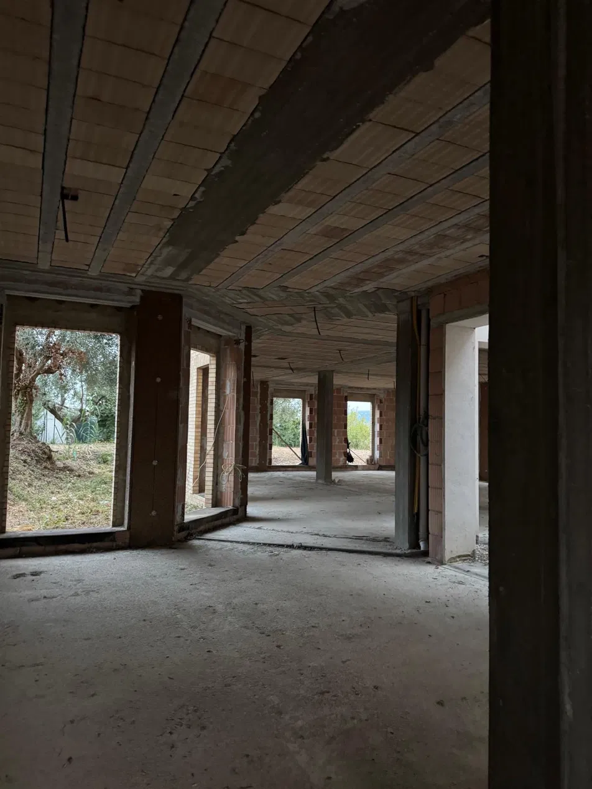

I nostri progetti
Primo progetto · Via delle Caserme, 69 — Pescara
Attività presso la Sede centrale
Nella nostra sede di Via delle Caserme, 69 a Pescara portiamo avanti le attività della Fondazione rivolte alla comunità. Apri un'attività per scoprirne i dettagli.

Formazione, informazione e borse di studio
Promozione di attività formative e informative rivolte a famiglie con persone bisognose di assistenza psicologica, agli operatori del settore sociosanitario, religioso e delle scienze psicopedagogiche, nonché agli insegnanti di scuole e istituti di ogni ordine e grado. Istituzione di borse di studio, anche in collaborazione con Enti e istituzioni aventi finalità analoghe, volte alla realizzazione e diffusione di pubblicazioni e materiali divulgativi.
Leggi il regolamento della borsa di studioIniziative di accoglienza e promozione culturale
Organizzazione di attività di accoglienza, intrattenimento, formazione e informazione rivolte a giovani e persone della terza età con problematiche di adattamento psico-sociale. Promozione di iniziative culturali e sociali mirate a favorire inclusione, benessere relazionale, partecipazione alla vita comunitaria e prevenzione del disagio, anche in collaborazione con realtà territoriali e istituzionali.
Secondo progetto · San Salvatore, Rosciano (PE)
Villa Pace
Stiamo ristrutturando Villa Pace, il nostro progetto più ambizioso: un centro di attività spirituali, sociali e di accoglienza, casa albergo per la terza età e la gioventù, aperto alla comunità, alla cura e all'innovazione. Scorri le foto per vedere lo stato dei lavori.

